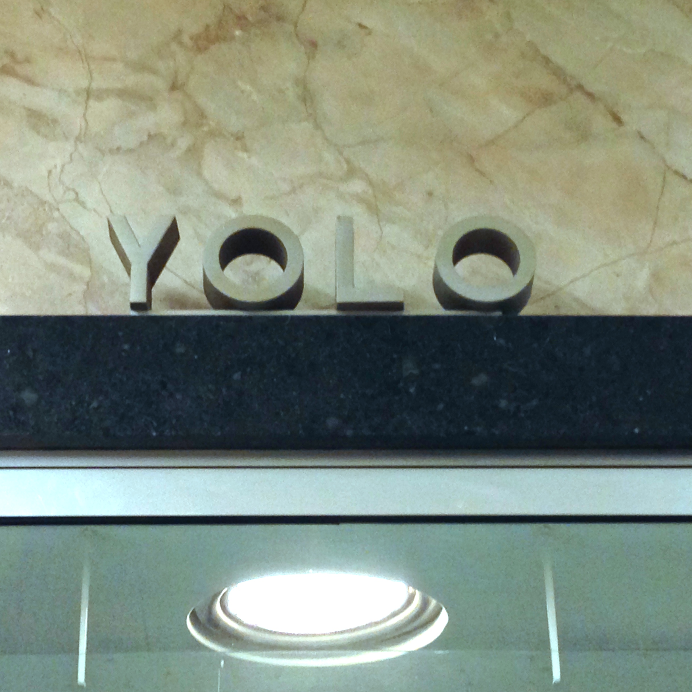

<!doctype html>
<html>
  <head>
    <meta charset='utf-8'>
    <meta content='IE=edge;chrome=1' http-equiv='X-UA-Compatible'>
    <title>
      My Blog - Capitol Type
    </title>
    <link href='http://fonts.googleapis.com/css?family=Muli:300,400,300italic,400italic' rel='stylesheet' type='text/css'>
    <link href='http://fonts.googleapis.com/css?family=Montserrat:400,700' rel='stylesheet' type='text/css'>
    <link href='http://fonts.googleapis.com/css?family=Radley:400,400italic' rel='stylesheet' type='text/css'>
    <script src='javascripts/jquery.js'></script>
    <link href="../../../stylesheets/all-df022ed0.css" rel="stylesheet" type="text/css" />
    <script src="../../../javascripts/all-1f5a3be8.js" type="text/javascript"></script>
    <link rel="alternate" type="application/atom+xml" title="Atom Feed" href="/feed.xml" />
  </head>
</html>
<body>
  <main role='main'>
    <button class='js-menu-trigger sliding-menu-button' type='button'>
      Menu
    </button>
    <nav>
      <div class='js-menu sliding-menu-content'>
        <ul>
          <ol>
            <li>
              <a href="../../../locations/sacramento.html">Sacramento</a>
            </li>
            <li>
              <a href="../../../locations/san-francisco.html">San Francisco</a>
            </li>
            <li>
              <a href="../../../locations/oakland.html">Oakland</a>
            </li>
            <li class='blog-title'>
              <a href="../../../">My Type</a>
            </li>
          </ol>
        </ul>
      </div>
      <div class='js-menu-screen menu-screen'></div>
    </nav>
    <section>
      <h1 id="type-at-the-state-capitol">Type at the State Capitol</h1>
      <p>We took a day trip to Sacramento to walk through the capitol building. So many time periods represented in these type specimens.</p>
      
      <p>
      Really curious to know if anyone uses these phone booths anymore.
      
      Found a dust pan that had "Day Shift" carved in to the top layer of the paint on the metal.
      
      This style of signage is all over the capitol.
      
      Right when we walked in we were greeted by an information booth. It was unmanned and had a retro vibe. Really classy type.
      
      
      </p>
    </section>
  </main>
</body>
